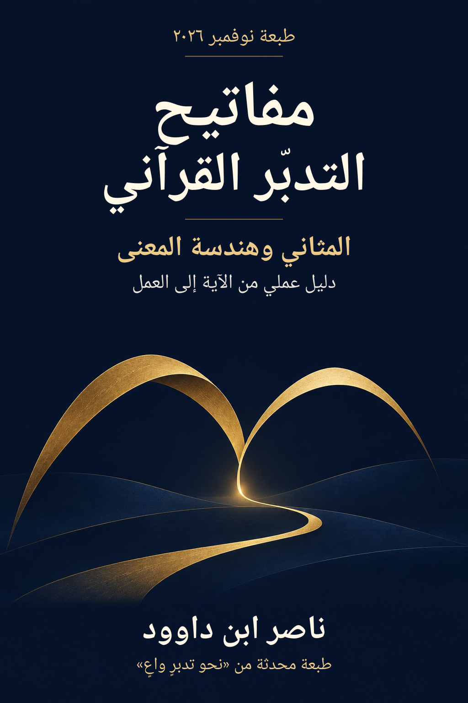

طبعة محدثة من «نحو تدبرٍ واعٍ»
مفاتيح التدبّر القرآني: المثاني وهندسة المعنى
دليل عملي من الآية إلى العمل
ناصر ابن داوود · نوفمبر 2026
طبعة منقّحة ومثرّاة من «نحو تدبرٍ واعٍ». دليل عملي يربط قراءة القرآن بالعمل، ويفرّق بين المثاني والسبع المثاني ونظام المثاني، ويقدّم أمثلة وتمارين لاختبار الاستنتاجات وفق منهج QCROS. ويخصّص الفصل التاسع لأولي الألباب والاستماع الواعي واتباع أحسن القول.
ما الجديد في هذه الطبعة؟
يقدّم الفصل الأول قراءة للمثاني على مستويين يشملان صلة الحروف داخل الكلمة والعلاقات بين السور. وتبقى عبارة «السبع المثاني» في موضعها القرآني مع عرض التفسير المروي وبيان ما يحتاج إلى اختبار من المقترحات البنائية والعددية.
تسير الفصول التسعة من اللسان والرسم إلى تطبيقات التدبر والعدل في الواقع المعاصر. ويصل الفصل التاسع، «أولو الألباب… أصحاب العقول الحية»، بين الاستماع واتباع أحسن القول، ومرتبة التذكّر والاستجابة، وبطاقة الفحص المنهجي (QCROS). وتجمع الملاحق مصفوفة للجذور، وبطاقة لفحص الاستنتاجات، ومعجمًا للفروق، ودليلًا للرموز والمخطوطات.
السبع المثاني في ضوء البنية اللغوية والبنية العددية، أحد المراجع التي يستند إليها بيان المثاني في هذه الطبعة.
النص الكامل
تعرض القراءة داخل الموقع المخططات الأربعة في مواضعها. ترد جداول الملاحق في آخر النسخة النصية.
افتح النص للقراءة
قراءة PDF داخل الموقع
تتوفر الطبعة الحالية للقراءة بصيغة TXT.